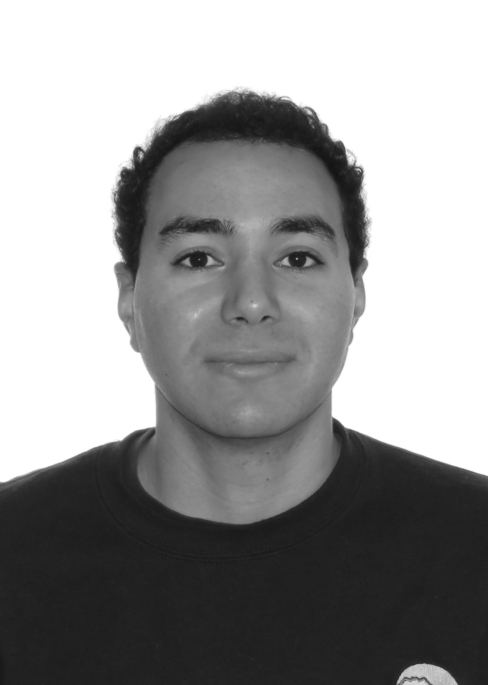

Scientist · Advanced Machine Intelligence
I am a Scientist and Member of Technical Staff on the founding team of Advanced Machine Intelligence (AMI). Previously, I was a Research Scientist at Meta in Fundamental AI Research (FAIR).
I work on self-supervised learning and world models, with a focus on Joint-Embedding Predictive Architectures (JEPA), which learn abstract representations of the world by predicting in latent space rather than pixel space. My work on I-JEPA and V-JEPA has been covered by Quanta Magazine, CNBC, Reuters, Fortune, La Presse, and others.
I received my PhD from McGill University, supported by a Vanier Scholarship. I remain involved in academic service, mentorship, and teaching. Recent activities include:
I am happy to receive email requests to participate in teaching or mentorship initiatives.

We're all here on this earth to help others; what on earth the others are here for, I have no idea. — W.H. Auden
Selected Publications
Doctoral Students Co-Advised
Co-advised alongside each student's academic advisor.
Gaoyue Zhou
Academic advisor(s): Lerrel Pinto and Yann LeCun
Emily Kaczmarek
Academic advisor(s): Tal Arbel
Wancong Zhang
Academic advisor(s): Yann LeCun
Artem Zholus
Academic advisor(s): Sarath Chander
Marcel Hussing
Academic advisor(s): Eric Eaton
Benno Krojer
Academic advisor(s): Siva Reddy
Open-Source Code
Official codebase for V-JEPA 2, a self-supervised video world model for understanding, prediction, and planning.
Official codebase for I-JEPA, a non-generative approach for self-supervised learning from images.
Official codebase for V-JEPA, a method for self-supervised learning of visual representations from video.
Official codebase for Masked Siamese Networks, a self-supervised learning framework for label-efficient image classification.
Official codebase for PAWS and SuNCEt, semi-supervised methods for learning visual features with limited labels.
Official codebase for Stochastic Gradient Push, a method for distributed deep learning over peer-to-peer networks.